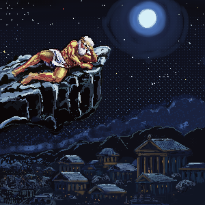
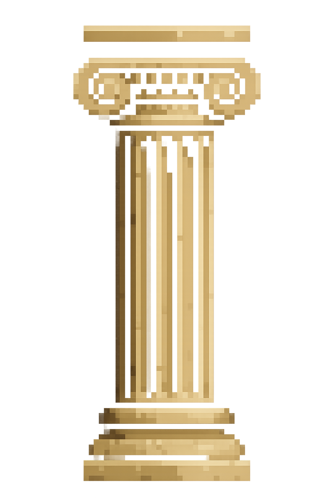

in a Republic far, far away...
A TIME OF TURMOIL...
Rome: Expanded Chaos Edition
Year 509 BCE.
The Etruscan King's reign of terror
has ended, but the new Roman Republic
teeters on the brink.
Every cause for celebration seems
to birth new threats from all
corners of the earth.
Senators bicker, the legions plot
mutiny and enemy armies gather on the frontiers.
But most dangerous of all:
Rome itself.
“The welfare of the people is the ultimate law.” — Cicero
The people grow restless,demanding bread and bloody spectacle.
YOU, a rising Senator, must use all
your cunning ambition to lead the
city through crises large and small.
...or watch it crumble?
“He who controls the mob soon learns he cannot control himself.” Whispers Cato the Younger
Meanwhile, Jupiter watches idly from atop Mount Olympus....


